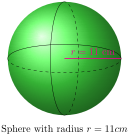
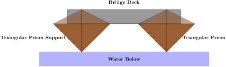
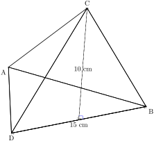
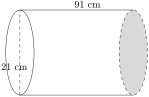
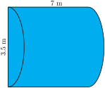
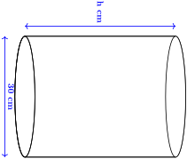
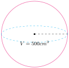

Section 2.7 Surface Area and Volume of Solids
Surface Area.
Activity 2.7.1.
\(\textbf{Materials Needed:}\)
Solids made of cardboard or plastic (cube, rectangular prism, cylinder, cone, pyramid, sphere)
Grid paper or plain paper
Scissors, rulers, tape, glue and String (for measuring curved edges like the circumference of a circle)
Pre-made nets of solids (optional)
Worksheet to record observations and answers
Choose one solid object (e.g., cube, cone, cylinder).
Create a net for their object (either by unfolding a model or using printed templates).
Trace the faces onto grid paper or measure them using a ruler or string.
Calculate the area of each face using appropriate formulas.
Add up all face areas to find the total surface area.
For cylinders and cones, use a string to measure the curved part.
Surface area is the total area of the exposed or outer surfaces of a prism.
🔹A right prism is a geometric solid that has a polygon as its base and vertical faces perpendicular to the base. The base and top surface are the same shape and size. It is called a “right” prism because the angles between the base and faces are right angles.
🔹 The name given to the solid that is unfolded this way is called a net. When a prism is unfolded into a net, we can clearly see each of its faces.
🔹 We can thereby clearly calculate the surface area by finding the area of each faces and add them all together to get the surface area of the Prism.
🔹 For example, If we are given a cylinder, the top and bottom faces are circles and the curved area is like a rectangle. So when finding it’s surface area we find the area of the two circles and the area of the rectangle then we add all these areas all together to compute the cylinder’s surface area.
\(\textbf{Extended Activity}\)
Wrap or cover real items (e.g., a cereal box, soda can) using calculated surface area. Design a custom box or can with a specific surface area for packaging a product.
\(\textbf{Study Questions}\)
How did your net help you find the surface area?
What would happen if your object was twice as big — would surface area double?
Derive and apply surface area formulas using practical reasoning and measurement.
Subsection 2.7.1 Surface area of Prisms
Activity 2.7.2.
A cube is unfolded to a net made up of 6 identical squares .
\(\textbf{Materials needed.}\)
Paper Folds of multiple cubes.
Rulers
-
Glue
🔹 Measure the side length (s) of one smaller square on a face.
🔹 Count how many squares make up one face for example, a 3x3 or 4x4
🔹 Make an entire cuboid.
🔹 Count how many squares make up the cuboid.
-
Discuss in your groups what will happen if the surface area doubles in size.
🔹 Why do bigger cubes have more surface area?
🔹 A prism is a Geometric object with two identical, parallel bases and straight sides connecting them.
🔹Examples of right prisms are cylinders, rectangular prisms, cubes and triangular prisms.
\(\textbf{Types of Prisms}\text{:}\) Rectangular and cube prisms, Triangular Prisms and Cylinders.
\(\textbf{Surface Area of a cube}\)
Observe the cuboid below whose side is 8cm.
Example 2.7.1.
(a). Work out the surface area of the cube whose side is 8cm.
Solution.
(b).The surface area of the cube.
The area of one face.
\begin{align*}
= \amp 8 \,\text{cm} \times 8 \, \text{cm} \\
= \amp 64 \, \text{cm}^2
\end{align*}
There are 6 faces therefore the surface area of the cube is;
\begin{align*}
= \amp 6 \, \times 64 \, \text{cm}^2\\
= \amp 384 \, \text{cm}^2
\end{align*}
The surface area of the cube is 384 \(\text{cm}^2\)
\(\textbf{Exercise}\)
1.A large wooden dice with sides measuring 12 cm each is to be painted on all six faces. If one milliliter of paint covers 5 cm², calculate the total amount of paint required to cover the dice completely.
2. A cube has a side length of 25 cm. If the cost of the cardboard material is Ksh.110 per square centimeter, determine the total cost of making one box. How much would it cost to produce 500 such boxes?
3. A decorative gift box is shaped like a cube with each side measuring 18 cm. To wrap it completely, calculate the total area of wrapping paper needed. If the shop sells wrapping paper in sheets of 1 square meter, how many sheets will be required to wrap 20 such gift boxes?
4. A small storage room is designed in the shape of a cube with an edge length of 4 meters. The floor, four walls, and ceiling all need to be tiled. If each tile covers an area of 0.5 square meters, determine the total number of tiles required to fully cover the interior of the room
5. A cube-shaped metal water tank with a side length of 2.5 meters is being coated with a protective layer on all its surfaces to prevent rusting. If the coating material costs Ksh.150 per square meter, calculate the total cost to coat the entire tank.
6. A pet shop wants to construct a cube-shaped aquarium with a side length of 1.2 meters. The aquarium needs to be made entirely of glass, including the base and all four vertical sides, \(\textbf{but the top will remain open}.\) If the cost of glass is Ksh. 750 per square meter, find the total cost of constructing the aquarium.
7. A company is designing a cube-shaped promotional stand with a side length of 5 meters. The stand will be covered with high-quality wallpaper on all six faces. If one roll of wallpaper covers 10 square meters, determine the number of rolls required to fully cover the cube.
Subsection 2.7.2 Surface area of a cuboid
Activity 2.7.3.
\(\textbf{Surface area of a Cuboid}\)
View the net of a cuboid in order to understand how to find the surface area of the cuboid.
Activity 2.7.4. Brick wall construction..
\(\textbf{Materials needed;}\)
♦ Small bricks
♦ Rulers
♦ Worksheets
🔹 In your group build up a cuboid wall by stacking similar small bricks to a desired height.
🔹 Add more columns and rows until the wall is entirely covered with bricks and it resembles a box.
🔹 Count the number of bricks that you used and record.
🔹 Calculate the surface area of the cuboid using the formula: \(2(\text{l} \times \text{w}) + 2(\text{l} \times \text{h}) + 2(\text{w} \times \text{h})\)
🔹 Compare their results. What do you notice? Share with your group members and discuss why builders need surface area e.g. for painting or tiling, building up walls and houses etc.
A cuboid is also called a rectangular Prism.
\(\textbf{Rectangular Prism;}\) It has a rectangle at its base. A cube is a rectangular prism with all sides of equal length.
The surface area of a cuboid is the total area of all six faces of the cuboid.
When learning about area, we calculated the surface area of a cuboid. Since the opposite faces of a cuboid are identical, the \(\textbf{surface area of a cuboid}\) can be calculated by finding the \(\textbf{area of each face}\) and \(\textbf{then adding them together}\text{.}\)
In this section, we will calculate the surface area of a cuboid from their nets.
Example 2.7.2.
Find the surface area of the following rectangular prism:
Solution.
Sketch and label the net of the prism.
Find the areas of the different shapes in the ne
\begin{align*}
\text{large rectangle} = \amp \text{ perimeter of small rectangle} \times \text{length} \\
= \amp (3+8+3+8)\text{cm} \times 14\text{cm} \\
= \amp 22\text{cm} \times 14\text{cm} \\
= \amp 308\text{cm}^2
\end{align*}
\begin{align*}
2 \, \text{small rectangle} \amp = 2(8 \text{cm} \times 3\text{cm} ) \\
= \amp 2(18) \,\text{cm} \\
= \amp 36\text{cm}^2
\end{align*}
Find the sum of the areas of the faces
\begin{align*}
\text{large rectangle} + \text{small rectangle} = \amp (308 + 36)\text{cm}^2 \\
= \amp 344 \, \text{cm}^2
\end{align*}
The surface area of the rectangular prism is \(344 \, \text{cm}^2\)
\(\textbf{Exercise}\)
1. A rectangular cardboard box has dimensions of 10 cm by 8 cm by 5 cm. Calculate its total surface area, which represents the total material required to construct the box.
2. (a) A gift shop sells a rectangular gift box with dimensions 30 cm by 20 cm by 12 cm. If the shop owner wants to wrap the entire box, including all its faces, calculate the minimum amount of wrapping paper needed. If the wrapping paper is sold in rolls of 1 square meter, how many rolls would be needed to wrap 50 boxes?
(b) A gift box is being wrapped for a special occasion, and it has dimensions of 20 cm in length, 12 cm in width, and 10 cm in height. Calculate the exact amount of wrapping paper required to cover the entire box without any overlap.
3. A metal box used for shipping measures 25 cm by 15 cm by 10 cm. Compute the total amount of sheet metal required to construct the box, assuming no material is wasted.
4. The total surface area of a cuboid is given as 484 cm² and two of its dimensions are 8 cm and 6 cm. Determine the missing height (h) of the cuboid.
5. A cuboidal storage room has dimensions of 4 m by 5 m by 3 m. If the walls, floor and ceiling need to be painted, determine the total area that will be covered with paint.
6. A rectangular classroom has a length of 10 meters, a width of 8 meters and a height of 4 meters. The four walls and the ceiling need to be painted, but the floor is covered with tiles. If one litre of paint covers 5 square meters, calculate the total area to be painted and determine the amount of paint required.
7. A company is designing a cuboidal packaging box with dimensions 25 cm by 15 cm by 10 cm. The company wants to reduce costs by using the minimum possible material while ensuring the entire box is covered. Calculate the total surface area of the box and determine the cost of producing 1,000 such boxes if the material costs Ksh. 135 per square centimeter.
8. A swimming pool in the shape of a cuboid has dimensions 12 meters in length, 5 meters in width, and 3 meters in depth. The interior of the pool, including the bottom and the four walls, needs to be covered with waterproof tiles. If each tile has an area of 0.25 square meters, determine the total number of tiles required to completely cover the pool’s surface.
9. A metal storage container is shaped like a cuboid with dimensions 6 m by 4 m by 3 m. The container needs to be insulated on all its surfaces except for one of the 6 m by 4 m walls, which serves as the entrance. If the insulation material costs Ksh.295 per square meter, determine the total cost of insulating the container.
Subsection 2.7.3 Surface Area of a pyramid
Activity 2.7.5. Net of a triangle based Pyramid.
Paper Folding to form a Pyramid.
Materials Needed.
-
Steps.
♦ Observe the net of the pyramid shown above.
♦ Draw on the Colored paper or cardstocks the net of a pyramid that is, four triangles. Note the sides of the triangles and height should be equal.
♦ Cut off the extra paper to remain with the pyramid net.
♦ Fold along the edges to form a pyramid. Hold the triangles in position using a tape.
♦ Using a ruler, measure the base height and slant height of the triangular faces.
Find the volume of the pyramid you have constructed.
Activity 2.7.6. Observing pyramidal objects in the surrounding environment.
-
♦ Identify pyramid-shaped objects around school/home e.g., tent(Shown alongside), roof, food container, toys etc.
♦ Measure dimensions or use estimated values.
♦ Find their surface area using the formula and compare with classmates.
A \(\text{pyramid}\) is a geometric solid object that has a polygon as its base and faces that converge at a point called the apex. In other words the faces are not perpendicular to the base
The polygons that can act as the face of the pyramids include:
🔹 Triangle: Thus called triangular pyramid.
🔹 Squares: Thus called square pyramid.
🔹The two pyramids take their names after the shape of their base.
A right pyramid’s line between the apex and the centre of the base is perpendicular to the base.
Example 2.7.3.
Find the surface area of the following triangular pyramid (correct to 1 d.p)
Solution.
The surface area of a triangular pyramid is the sum of the areas of all \(\textbf{four triangular faces}\)
In finding the surface area we need to recall the definations of a net and a prism.
The net of a pyramid consists of a base triangle \(ABC\text{,}\) which is a polygon that represents the base of the pyramid, and triangular faces\(\angle \, ABD,\, \angle \, BCD, \, \angle ACD\) that represent the sides of the pyramid.
Each triangle’s area will be found using Heron’s Formula:
\begin{align*}
A =\amp \sqrt{S(S-a)(S-b)(S-c)}
\end{align*}
Where \(S\) is the semi perimeter.
\begin{align*}
S = \amp \frac{a+b+c}{2}
\end{align*}
Find the Area of the Base Triangle \(ABC\text{.}\) Given sides \(AB = 4\, \text{cm}, \, BC = 5\, \text{cm} , \,AC = 3\, \text{cm}\)
Calculate the semi-perimeter:
\begin{align*}
S = \amp \frac{4\, \text{cm}+5\, \text{cm}+3\, \text{cm}}{2} = 6 \, \text{cm}
\end{align*}
Apply Heron’s Formula:
\begin{align*}
A_{ABC} = \amp \sqrt{6(6-4)(6-5)(6-3)} \\
= \amp \sqrt{6 \times(2)\times(1)\times(3)} \\
= \amp \sqrt{36} \\
= \amp 6 \, \text{cm}^2
\end{align*}
Find the Area of Side Triangle\(ABD\) Given sides \(AB = 4\, \text{cm}, \, AD = 6\, \text{cm} , \, BD = 7\, \text{cm} \)
\begin{align*}
S = \amp \frac{4 \,\text{cm}+6\, \text{cm}+7\, \text{cm}}{2} = 8.5 \, \text{cm} \\
A_{ABD} = \amp \sqrt{8.5(8.5-4)(8.5-6)(8.5-7)} \\
= \amp \sqrt{8.5 \times(4.5)\times(2.5)\times(1.5)} \\
= \amp \sqrt{143.44} \\
= \amp 11.97 \, \text{cm}^2
\end{align*}
Find the Area of Side Triangle\(BCD\) Given sides \(BC = 5, \, \text{cm} \,CD = 6 , \, \text{cm} \, BD = 7 \text{cm}\)
\begin{align*}
S = \amp \frac{5 \, \text{cm}+6 \, \text{cm}+7 \, \text{cm}}{2} = 9 \, \text{cm} \\
A_{BCD} = \amp \sqrt{9(9-4)(9-6)(9-7)} \\
= \amp \sqrt{9 \times(4)\times(2)\times(3)} \\
= \amp \sqrt{216} \\
= \amp 14.7 \, \text{cm}^2
\end{align*}
Find the Area of Side Triangle\(ACD\) Given sides \(AC = 3, \, AD = 6 , \, CD = 6 \)
\begin{align*}
S = \amp \frac{3 \, \text{cm}+6 \, \text{cm}+6 \, \text{cm}}{2} = 7.5 \, \text{cm} \\
A_{ACD} = \amp \sqrt{7.5(7.5-4)(7.5-6)(7.5-7)} \\
= \amp \sqrt{7.5 \times(4.5)\times(1.5)\times(1.5)} \\
= \amp \sqrt{75.94} \\
= \amp 8.71\, \text{cm}^2
\end{align*}
Find the Total Surface Area. Surface Area = \(A_{ABC} + A_{ABD} +A_{BCD} + A_{ACD}\)
\begin{align*}
= \amp 6 \, \text{cm}^2 + 11.97 \, \text{cm}^2 + 14.7 \, \text{cm}^2 + 8.71 \, \text{cm}^2 \\
= \amp 41.38 \, \text{cm}^2
\end{align*}
Example 2.7.4.
Draw the net of the pyramid.
Solution.
The net of the pyramid is shown below.
The surface area of a pyramid is the total area of the lateral faces and the base of the pyramid.
Example 2.7.5.
Calculate the surface area of a pyramid whose base is rectangular and slant height \(6\)\(\text{cm}\) as shown below.
Solution.
\(\text{First we form the net of the pyramid.}\)
The area of the rectangular base
\begin{align*}
= \amp \text{length} \times \text{width} \\
= \amp5 \, \text{cm} \times 3 \, \text{cm} \\
= \amp 15 \, \text{cm}^2
\end{align*}
The height of triangles with base of \(5 \, \text{cm}\)
\begin{align*}
= \amp\sqrt{36-6.25} \\
= \amp\sqrt{29.75} \\
= \amp 5.45 \, \text{cm} \, (2 \text{d.p})
\end{align*}
The area of a triangle with base of 5 cm
\begin{align*}
= \amp\frac{1}{2}\times \text{base} \times \text{height} \\
= \amp\frac{1}{2} \times 5 \times 5.45 \\
= \amp13.625 \, \text{cm}^2
\end{align*}
Since this triangles are two,Therefore total area is:
\begin{align*}
= \amp 2 \times 13.625\\
= \amp27.25 \, \text{cm}^2
\end{align*}
The height of triangles with base of 3 cm
\begin{align*}
= \amp\sqrt{6^2-1.5^2} \\
= \amp\sqrt{36-2.25} \\
= \amp\sqrt{33.75} \\
= \amp5.81 \, \text{cm}^2 (2 \text{d.p})
\end{align*}
The area of a triangle with base of 3 cm
\begin{align*}
= \amp\frac{1}{2}\times \text{base} \times \text{height} \\
= \amp\frac{1}{2} \times 3 \times 5.81 \, \text{cm}^2\\
= \amp 8.715 \, \text{cm}^2
\end{align*}
Since this triangles are two,Therefore total area
\begin{align*}
= \amp 2 \times 8.715\\
= \amp17.43 \, \text{cm}^2
\end{align*}
Therefore, the surface area of the pyramid is,
\begin{align*}
= \amp15 \, \text{cm}^2 + 27.25 \, \text{cm}^2 + 17.43 \, \text{cm}^2 \\
= \amp59.68 \, \text{cm}^2
\end{align*}
Example 2.7.6.
Find the surface area of a square pyramid with a height of 6 cm and a side length of 4cm.
Solution.
Select the correct formula and substitute with the given values.
We are given b = 2 by 2 and H = 4, therefore
\begin{align*}
\text{Surface Area} = \amp \text{Base area} + 4\text{(area of triangles)} \\
\text{Base Area} = 2 \, \text{cm} \times 2 \, \text{cm}\amp \\
= \amp 4 \, \text{cm}^2 \\
\text{Area of one triangle} = \amp \frac{1}{2} b \times h \\
= \amp \frac{1}{2} \times 2 \, \text{cm} \times 4 \, \text{cm} \\
= \amp 4 \, \text{cm}^2 \\
\text{Area of all triangles}= \amp 4 \, \text{cm}^2 \times 4\, \text{triangles} \\
= \amp 16 \, \text{cm}^2\\
\text{Surface area}= \amp 16 \, \text{cm}^2 + 4 \, \text{cm}^2\\
= \amp 20 \, \text{cm}^2
\end{align*}
The surface area for the square pyramid is \(20 \, \text{cm}^2\text{.}\)
\(\textbf{Exercise}\)
1. A square-based pyramid has a base with sides measuring 10 cm each, while its triangular faces have a slant height of 15 cm. Determine the total surface area of this pyramid, including the base and all four triangular faces.
2. A pyramid with a square base has a total surface area of 400 cm², and its base side measures 8 cm. Using the formula for surface area, calculate the slant height of the pyramid.
3. A square pyramid has a base with sides of 24 cm each, and the height of the triangular face is 18 cm. Find the total surface area of the pyramid.
4. A miniature paper pyramid is being designed with a square base of 12 cm by 12 cm and a slant height of 20 cm. How much paper is required to construct the entire pyramid?
5. The roof of a small storage building is in the shape of a rectangular pyramid with a base side length of 5 m and a slant height of 6 m. If the entire roof needs to be covered with wooden shingles, calculate the total area that needs to be covered.
Subsection 2.7.4 Surface Area of a Sphere
Activity 2.7.7.
Fun Activity Idea
🔹Use an orange or a ball and cover it with small square sticky notes.
🔹 Estimate how many squares fit over the sphere’s surface.
🔹Then compare with other group members’ results to the actual formula!
The surface area of a sphere is the total area covering its curved outer surface.
Formula for Surface Area of a Sphere
Surface Area \(= 4 \pi r^2\) where r is the radius of the sphere.
The \(= 4 \pi r^2\) comes from integrating small patches over the sphere’s curved surface. We can compare the sphere to how a sphere fits inside a cylinder of the same radius and height.
Example 2.7.7.
Find the surface area of the following sphere (correct to 1 decimal place
Solution.
Surface area of a sphere = \(4 \pi r^2\)
\begin{align*}
= \amp \frac {22}{7}\times 4 \times(7\, \text{cm})^2 \\
= \amp \frac{22}{7} \times 196\, \text{cm}^2 \\
= \amp 22 \times 28\, \text{cm}^2\\
= \amp 616\, \text{cm}^2
\end{align*}
Example 2.7.8.
-
A sphere has a radius of 14 cm.
a) Find its total surface area.
b) If the sphere were covered with paint, how much area would be painted?
c)If a second sphere has twice the radius, how does its surface area compare to the first sphere?
Hint.
Remember, if the radius doubles, the surface area increases by 4 times (since \((2r)^2 = 4 \pi r^2\text{.}\)
Solution.
a) Total Surface area.
\begin{align*}
= \amp 4 \times \frac {22}{\cancel {7}}\times \cancel{14} \, \text{cm} \times 14\, \text{cm} \\
= \amp 4 \times 22 \times 2\, \text{cm} \times 14\, \text{cm} \\
= \amp 4 \times 22 \times 28\\
= \amp 4 \times616\, \text{cm}^2\\
= \amp 2464 \,\text{cm}^2
\end{align*}
The surface area of the sphere is \(2464\, \text{cm}^2\) .
b) The \(\textbf{area of the sphere painted}\) would be the entire surface area.
so the Painted area =\(2464 \,\text{cm}^2\text{.}\)
c) If the radius is doubled i.e,
( \(r = 14 \, \text{cm}+ 14\, \text {cm} = 28\, \text{cm}\)),
the new surface area would be:
\begin{align*}
\text{ New surface area} = \amp 4 \frac {22}{\cancel {7}}\times \cancel{28} \, \text{cm} \times 28 \text{cm} \\
= \amp 4 \times 22 \times 4 \, \text{cm} \times 28 \,\text{cm} \\
= \amp 4 \times 22 \times 112 \text{cm}^2\\
= \amp 4 \times616 \, \text{cm}^2\\
= \amp 9856 \, \text{cm}^2
\end{align*}
The surface area of the sphere is \(9856 \, \text{cm}^2\) if the radius is doubled.
\(\textbf{Exercise}\)
Find the surface areas of the figure below.
1. A football used in a tournament has a radius of 11 cm. Find the total surface area of the football, assuming it is a perfect sphere.

2. The surface area of a spherical ornament is measured to be 452.16 cm². Using the formula for the surface area of a sphere, determine the radius of the ornament.
3. A planetarium is constructing a dome in the shape of a hemisphere with a radius of 20 m. Since the dome covers only half of a full sphere, determine its total surface area, including the flat circular base.
4. A spherical metal ball with a radius of 7 cm is to be coated with a layer of paint. Determine the total area that needs to be covered with paint.
5. A company is designing a spherical water tank with a diameter of 24 cm. Compute the total surface area of the tank, which represents the external surface that will be painted.
Subsection 2.7.5 Surface Area of a Triangular Prism
\(\textbf{ Triangular Prism;}\) It has a triangle at its base.
A triangular prism is a geometric object with two identical triangular bases and three rectangular lateral faces. Its surface area is the total area of all its faces, measured in square units (cm², m², etc.).
Formula of the surface area of a triangular prism is the sum of:
1. Two triangular bases
\begin{align*}
\text{Area of a triangle} = \amp \frac{1}{2} \times \text{base} \times \text{height} \\
\text{Total area for two triangles} \\
= \amp 2 \times (\frac{1}{2} \times \text{base} \times \text{height}) \\
= \amp b \times h
\end{align*}
2.Two rectangular lateral faces
The three faces depend on the perimeter of the triangular base and the prism length \(L\)
\begin{align*}
\text{Lateral Area} = \amp \text{Base Area} \times \text{Lateral Area} \\
=\amp (b \times h) + (\text{Perimeter} \times L)
\end{align*}
Total Surface Area formula:
\begin{align*}
S.A =\amp \text{Base Area} \times \text{Lateral Area}
\end{align*}
Activity 2.7.8.
Example 2.7.9.
Find the Surface area of the triangular prism below.
Solution.
Step 1: Find the area of the base.
The triangle has a slant height of 5 cm and base 8cm. Using pythagorean relationship height i:
\begin{align*}
= \amp \sqrt{25 \, \text{cm} -16\, \text{cm}} = 3\, \text{cm}\\
\text{area of a triangle} = \amp \frac{1}{2}\times b \times h\\
= \amp (\frac{1}{2} \times 3\, \text{cm} \times 8 \,\text{cm} ) \times 12\, \text{cm} \\
= \amp 144 \,\text{cm}^2
\end{align*}
Step 2: Multiply the area of the base by the height of the solid to find the volume
\begin{align*}
\text{volume} = \amp \text{area of base} \times \text{height}\\
= \amp \frac{1}{2} b \times h \times H\\
= \amp 48 \, \text{cm}^2 \times 12 \, \text{cm} \\
\amp 576 \, \text{cm}^3
\end{align*}
The surface of the triangular prism is \(576 \, \text{cm}^3\text{.}\)
\(\textbf{Exercise}\)
1.If a litre of paint covers an area of \(2 \text{m}^2\text{,}\) how much paint does a painter need to cover:
a) A rectangular swimming pool with dimensions 4 m by 3 m by 5 m (the inside walls and floor only);
b) the inside walls and floor of a circular reservoir with diameter 7 m and height 5 m
2. A triangular prism has a triangular base of 8 cm,lengths of 12 cm and the height of the prism (perpendicular to the base) is 3 cm. Calculate the total surface area .
3. A prism is constructed with a triangular base of 8 cm height of 12 cm.. Determine the area of the triangular base, then use the given dimensions to compute the total surface area.
4. The total surface area of a triangular prism is measured as 360 cm² and its height is 20 cm. If the triangular base has sides measuring 9 cm, 12 cm and 15 cm, verify that this value is correct by calculating the surface area from scratch.
5. A bridge support structure has the shape of a triangular prism, with a base measuring 10 cm, 17 cm and 21 cm, and a height of 50 cm. Compute the total surface area, which will help determine how much paint is needed to coat its entire surface.
6. A glass showcase is designed in the shape of a triangular prism, with a triangular base of 5 cm, a height of 12 cm, and a prism length of 20 cm. If all faces are to be made of glass, calculate the total glass area required.
Subsection 2.7.6 Surface area of a Cone
Activity 2.7.9.
If a cone has a height of h and a base of radius r, show that the surface area is: \(\pi r^2 + \pi r \sqrt{r^2 + h^2}\)
Sketch and label the cone
Identify the faces that make up the cone
The cone has two faces: the base and the faces makig up a wall. The base is a circle of radius r and the walls can be opened out to a semi-circle
This curved surface can be cut into many thin triangles with height close to a (where \(\ell\) is the slant height). The area of these triangles or sectors can be summed as follow;
\begin{align*}
\text{Area} \amp = \frac{1}{2} \times \text{base} \times \text{height of a small triangle}\\
= \amp \frac {1}{2} \times 2 \pi r \times \ell \\
= \amp \pi r \ell
\end{align*}
\(\ell \) can be calculated using the pythagorean theorem.
\(\ell = \sqrt{r^2 + h^2}\)
Calculate the area of the circular base \(C_1 = \pi r^2\)
Calculate the area of the curved walls \(C_2 = \pi r \ell\) \(= \pi r \sqrt{r^2 + h^2}\)
To find the surface area we sum up all the areas that is:
\begin{align*}
A = \amp C_1 + C_2\\
= \amp \pi r^2 + \pi r \sqrt{r^2 + h^2}\\
= \amp \pi (r + \sqrt{r^2 + h^2})
\end{align*}
The \(\textbf{net of a cone} \) is a two-dimensional representation of the three-dimensional shape of the cone. It is made up of the curved surface of the cone laid out flat, so that you can see the shape of the cone. The net of a cone is useful for visualizing the shape of the cone and for calculating its surface area and volume.
Example 2.7.10.
Given a cone with the radius \(r = \, 14\, \text{cm} \) and an angle of \(\angle 60^\circ\text{.}\) Find the surface area of the cone.
Solution.
\begin{align*}
\text{Area of sector A}= \amp \frac{ \theta }{360^\circ} \pi r^2\\
= \amp \frac{60}{360^\circ} \times\frac{22}{7}\times14\times14 \\
= \amp102.67 \, \text{cm}^2 \\
\text{Area of circle B}= \amp\pi r^2 \\
= \amp\frac{22}{7} \times14 \, \text{cm} \times14\, \text{cm}\\
= \amp616 \, \text{cm}^2 \\
\text {Surface area}= \amp102.67 \, \text{cm}^2+616 \, \text{cm}^2 \\
= \amp 718.67 \, \text{cm}^2
\end{align*}
\(\textbf{Exercise}\)
1. A circular cone has a base radius of 5 cm and a slant height of 12 cm. Calculate the total surface area of the cone, including both the curved surface and the circular base
2. A cone is constructed with a base diameter of 16 cm and a height of 15 cm. Before finding the total surface area, determine the slant height of the cone using the Pythagorean theorem. Then, calculate the complete surface area.
3. A conical container, open at the top, is made of metal and has a base radius of 10 cm and a slant height of 18 cm. Determine the total metal sheet required to construct this container, excluding the base.
4. The total surface area of a cone is given as 314 cm², and its base radius is 10 cm. Using the surface area formula, determine the slant height of the cone.
5. A conical tent made of waterproof fabric has a radius of 4.2 m and a slant height of 7.5 m. If the tent does not have a base, calculate the area of fabric required to cover the tent completely.
Subsection 2.7.7 Surface Area of Composite solids
Activity 2.7.10.
\(\textbf{Tree Model Surface Area}\)
Theme: Modeling a tree using a cylinder \\(textbf{trunk}\) and hemisphere \(\textbf{tree top}\) or cone \(\textbf{pine tree top}\)
We will model a tree trunk as a composite solid, then calculate the total surface area, excluding the part where the top and trunk connect.
\(\displaystyle \textbf{Materials needed:}\)
-
Nets or templates for:
Cylinder (tree trunk)
Cone or hemisphere (tree top)
Scissors, glue or tape
-
Rulers and string
🌲 Step-by-Step Instructions.
1. Create the Model
Each student or group builds a tree model using
A cylinder for the trunk
-
Either a cone (pine tree) or a hemisphere (bushy tree) for the top
For example, a pine tree would be a cone on top of a cylinder.
2. Label Dimensions
-
Measure and label your dimensions (or give them pre-set values). For example:
♦ Radius of trunk = 3 cm
♦ Height of trunk = 10 cm
♦ Radius of cone = 3 cm
♦ Slant height of cone = 5 cm
3. Surface Area Calculation
Surface area of cylinder: ♦ Lateral area: \(2 \pi r h\) ♦ Bottom circle: \(\pi r2\) ♦ Do NOT count the top circle — it is covered by the cone
-
Surface area of cone:
♦ Lateral area: \(2 \pi r \ell\)
♦ Do NOT count the base of the cone — it is attached to the trunk
♦ Add all visible surfaces:
♦ \(\text{S.A}_{\text{total}} = \textbf{Lateral area of cone} + \textbf{Lateral area of cylinder} + \textbf{Base of cylinder}\)
-
Sample Calculation:
With the above values:
Cylinder lateral: \(2\pi \times (3 \, \text{cm})\times(10 \, \text{cm}) = 60 \, \text{cm} \times 3.14 =188.40 \, \text{cm}^2\)
Cylinder base: \(\pi \times (3 \, \text{cm})^2 =9 \, \text{cm} \times 3.14 = 28.26\, \text{cm}^2\)
Cone lateral: \(\pi (3 \, \text{cm}) \times (5 \, \text{cm}) = 15 \, \text{cm} \times 3.14 = 47.10 \,\text{cm}^2\)
\(S.A = 188.40 \, \text{cm}^2 + 28.26\, \text{cm}^2 + 47.10 \,\text{cm}^2 = 263.76 \, \text{cm}^2\)
-
\(\textbf{Study Questions}\)
Why don’t we count the base of the cone or the top of the cylinder?
What happens if the cone is bigger than the cylinder?
How would the surface area change if the tree had branches modeled as small cylinders?
A \(\textbf{Solid}\) is a three dimensional shape. \(\textbf{Solids}\) are objects with three dimensions i.e Width, Length and Height and they have surface area and volumes..
\(\textbf{Area of composite solids} \)
When two or more different solids are placed together, the result is composite solids. The surface area of a composite solids can be found by adding areas of the parts of the solids.
Example 2.7.11.
Find the surface area of the figure alongside. Leave your answer in \(\text{m}^2\)
Solution.
Surface Area of a cone.
\begin{align*}
\text{CSA_{cone}} = \amp \pi r \times ( \ell = \sqrt{r^2 +h^2} )\\
= \amp 3.14 \times (40 \,\text{cm}) \times \sqrt{(40)^2 \, \text{cm} + (30)^2 \, \text{cm}} \\
= \amp 3.14 \times 40 \, \text{cm} \times 50 \, \text{cm}\\
= \amp 125.60 \times 50 \\
= \amp 6,280 \text{cm}^2
\end{align*}
Curved Surface Area of the Cylinder
\begin{align*}
\text{CSA_{cylinder}} = \amp 2\pi r \times h\\
= \amp 2 \times 3.14 \times (40 \,\text{cm}) \times 50 \, \text{ cm} \\
= \amp 2 \times 3.14 \times 40 \, \text{cm} \times 50 \, \text{cm}\\
= \amp 251.20\, \text{cm}^2\times 50 \, \text{cm} \\
= \amp 12, 560 \,\text{cm}^2
\end{align*}
Base Area of the Cylinder (since only the bottom is exposed)
\begin{align*}
\text{Base Area} = \amp \pi r^2 \\
= \amp \pi \times (40)^2 \, \text{cm} \\
= \amp 5024 \, \text{cm}^2
\end{align*}
Total Surface Area \(= \text{CSA_{cylinder}} + \text{CSA_{cone}} + \,\text{Base Area} \)
\begin{align*}
= \amp 12, 560\, \text{cm}^2 + 6,280 \, \text{cm}^2 + 5024 \, \text{cm}^2 \\
= \amp 23,864 \, \text{cm}^2
\end{align*}
Converting to \(\text{m}^2 \)
\begin{align*}
1 \text{m} = \amp 100 \, \text{cm}\\
1 \text{m}^2 = \amp 10,000\, \text{cm}^2\\
? \amp 23,864\, \text{cm}^2 \\
= \amp 1\, \text{m} \times \frac{23,864\, \text{cm}^2} {10,000\, \text{cm}^2} \\
= \amp 2.3864 \, \text{m}^2 \\
= \amp 2.39\, \text{m}^2 \,\ \text{(to two d.p)}
\end{align*}
\(\textbf{Exercise}\)
1. The solid below is made of a cube and a square pyramid whose height is 33cm and cube sides measures 14cm. Answer the following
Find the surface area of the solid shown. Give your answers to two decimal places.
Now determine the volume of the composite solids.
2. Calculate the volume and surface area of the solid alongside.
3. A right circular icecream cone with a radius of 3 cm and a height of 12 cm holds a half scoop of ice cream in the shape of a hemisphere on top. If the ice cream melts completely, will it fit inside the cone? Show all calculations to justify your answer.
4. A lampshade is in the shape of a frustum of a cone. The top and bottom circular openings have diameters of 12 cm and 20 cm, respectively. If the slant height is 15 cm, find the lateral surface area of the lampshade.
5. Mogaka a grade 10 student was trying to sketch an image of a ice cream cone container with icecream. Find the surface area of the sketched image alongside.
6.A birthday cake has a cylindrical base of radius 10 cm and height 15 cm. The top is shaped like a hemisphere with the same radius. Find the total volume of the cake.
7.A goblet consists of a hemisphere on top of a cylindrical base. The hemisphere has a radius of 5 cm, and the cylinder has the same radius with a height of 12 cm. Find the surface of the goblet and determine how much liquid it can hold.
Subsection 2.7.8 Surface area of a Frustum
Activity 2.7.11.
Fruit Juice Cup Frustum
Modelling a frustum using a paper cup or cone-shaped fruit juice glass and calculate its surface area.
\(\textbf{ Materials needed:}\)
-
Printable nets of a cone (to cut and create a frustum)
🔹 Rulers or measuring tape
🔹 Scissors
🔹 Tape or glue
🔹 Formula sheet
🔹 Worksheets for sketching and calculations
A frustum is formed when the top part of a cone is cut off parallel to the base.
-
Surface area includes:
🔹 \(\textbf{Curved surface area}\) (side)
🔹 \(\textbf{Area of both circular bases}\)
-
Build the Frustum Model.
🔹 Take the cone net and cut off the top part (smaller cone) parallel to the base.
🔹 Assemble the remaining portion to form a frustum
🔹 Alternatively, use actual paper/plastic cups and measure directly
-
Label Dimensions
🔹 Radius of the larger base (R)
🔹 Radius of the smaller top base (r)
🔹 Slant height (l) of the frustum
🔹 (If not provided, measure the height and use the Pythagorean theorem)
Calculate Surface Area
-
🔹 Use the surface area formula:
🔹 Total Surface Area = \(\pi (R+r)\ell + \pi R^2 + \pi r^2\)
-
🔹 \(\pi(R+r)\)l: Curved surface
🔹 \(\pi R^2\text{:}\) Area of bottom base
🔹 \(\pi r^2\text{:}\) Area of top base
-
Example: Given Top radius (r): 3 cm , Bottom radius (R): 5 cm and Slant height (l): 6 cm
\begin{align*}
\text{Surface Area } =\amp \pi(5\, \text {cm}+3\, \text {cm})(6\, \text {cm}) + \pi(5\, \text {cm})^2 + \pi(3\, \text {cm})^2 \\
= \amp 3.14 \times (8\, \text {cm})\times(6\, \text {cm}) + 3.14 \times 25\, \text {cm} + 3.14 \times 9\, \text {cm}\\
=\amp (3.14 \times \, 48 \text {cm} ) \times(3.14 \times \, 25 \text {cm} ) \times(3.14 \times \, 9 \text {cm} ) \\
= \amp 150.72 \, \text{cm}^2 + 78.50 \, \text{cm}^2 + 28.26\, \text{cm}^2 \\
= \amp257.48\, \text{cm}^2
\end{align*}
-
\(\textbf{Study Questions}.\)
🔹 What would happen to the surface area if the top radius increased?
🔹 Why is it necessary to measure the slant height, not the vertical height?
🔹 Can you find any real-life objects shaped like a frustum?
-
\(\textbf{Assignment}\)
Design their own frustum cups with chosen dimensions.
Given a full cone, how much surface area is “lost” when the top is cut off?
A frustum is a cone or pyramid is cut parallel to its base, removing the top portion. This results in a truncated shape with two parallel bases one smaller than the other e.g a lampshades, Truncated cones in engineering, buckets, Tunnels, Cooling towers in power plants etc
-
Thereby a frustum is the portion of a cone (or pyramid) that remains after the top part is cut off parallel to the base.
\(\textbf{Properties of a Frustum}\)
Two Circular Bases – A frustum has a larger base and a smaller base (both circular).
Slant Height \(\ell\text{.}\) The distance between the two bases along the side of the frustum.
Height \(h\) – The vertical distance between the two bases.
Curved Surface Area (CSA) – The side surface that connects the two bases.
Total Surface Area (TSA) – The sum of the CSA and the areas of the two circular bases.
\(NOTE;\) Volume, the space inside the frustum, is calculated using a formula derived from a full cone.
\(\text{Types of frustums}\)
\(\text{Full cone}\)
Important formulas to note;
Slant Height \(\ell\)
\begin{equation*}
\ell = \sqrt{(H+h)^2 + R^2}
\end{equation*}
Curved Surface Area (CSA)
\begin{equation*}
CSA = \pi\, RL \,\text{and} \pi\, rl \, \text{for the smaller cone}
\end{equation*}
3. Total Surface Area (TSA)
\begin{equation*}
\pi RL + \pi rl
\end{equation*}
Example 2.7.12.
Find the surface area of the galvanized iron bucket below.

Solution.
Complete the cone from which the bucket is made, by adding a smaller cone of height \(x \)cm.
From the cocept of similarity and enlargement;
\(\frac{R}{r} = \frac{H}{h}\) and \(\frac{H-h}{R-r} = \frac{h}{r}\)
\begin{align*}
\frac{x}{15} = \amp\frac {x + 20 \text{cm} }{20 \text{cm}}\\
20 x = \amp 15x \text{cm} + 300 \text{cm}\\
300 \text{cm} = \amp 20 x - 15 x \\
300 \text{cm} = \amp 5x\\
60 \text{cm} = \amp x
\end{align*}
Surface area of a frustrum = Area of curved surface of bigger cone - Area of curved surface of snaller cone
\(\pi RL - \pi rl\)
\begin{align*}
\text{Surface area (Large)} = \amp \frac {22}{7} \times 20 \text{cm} \times \sqrt{80^2 + 20^2} \\
= \amp 5183.33 \text{cm}\\
\text{Surface area (small)} = \amp \frac {22}{7} \times 15 \text{cm} \times \sqrt{60^2 + 15^2} \\
= \amp 2915.62 \text{cm} \\
\text{Differences in the Surface areas} = \amp 5183.33 \text{cm} - 2915.62 \text{cm}\\
= \amp 2267.71 \text{cm}^2
\end{align*}
Subsection 2.7.9 Volume of Solids.
Activity 2.7.12.
\(\textbf{Materials Needed:}\)
Transparent plastic containers shaped as: Cube or rectangular prism, Cylinder, Cone, Pyramid (square or triangular base) and Spheres (or hemispheres)
Sand, water, or rice (as filling material)
Measuring cup (with volume in millilitres or cm³)
Large tray or basin (to catch spills)
Worksheet for recording observations and making predictions
Take different empty containers and weigh them. Which shape do you think holds the most? or the least? Rank them from largest to smallest volume. Let them share and discuss predictions in small groups
-
Fill each of them separately and Compare
\(\textbf{Explore}\)
Start with the cylinder and cone with the same height. Fill the cone with sand/water and pour it into the cylinder
-
How many cones fill the cylinder?
\begin{align*}
3\, \amp\text{That is the cone is} \frac{1}{3} \text{a cylinder}.
\end{align*}
-
Whats the volume of a cylinder? \(V = \pi r^2\)
If a cone is \(\frac{1}{3} \, \text{a cylinder then it's volume will be; } \frac{1}{3} \pi r^2\)
-
Do the same with a pyramid and a matching prism (same base and height). How many pyramids fill the prism?
3 pyramids fill tthe prism.
-
What is the volume of a pyramid?
\(v = \frac{1}{2} \times \text{base area} \times h\)
Try filling the sphere into the cylinder (if you have a hemisphere: about 2 hemispheres = 1 sphere)
Compare volumes visually and discuss the differences with your classmates.
For cube or prism, measure directly with a ruler and calculate using \(V = \text{length} \times \text{width} \times \text{height}\)
Measure the dimensions and use their measuring cups to check how much each container holds. They then calculate the actual volume using the formulas and compare their estimates and results.
\(\textbf{Study Questions}\)
What patterns do you notice between shapes that have the same base and height?
Why do you think cones and pyramids have a \(\frac{1}{3}\) in their volume formula?
Which shapes are most efficient at holding volume?
\(\textbf{Extended Activity}\)
Design a container that holds exactly 500 cm³ using any shape. Estimate the volume of irregular solids using displacement.
\(\textbf{Volume of a Cube}\)
\(\textbf{Volume}\) is the geometric space occupied by an object, or the contents of an object. It is measured in cubic units.
Computation of a volume is achieved by multiplying the area of the base of the solid by the height of the solid
Let us proove this from the following examples.
Example 2.7.13.
Find the volume of the following cube whose side is \(5\, \text{cm}.\)
Solution.
Step 1: Find the area of the base
\begin{align*}
\text{Area of square} = \amp S^2\\
= \amp 5^2\\
= \amp 25 \, \text{cm}^2
\end{align*}
Step 2: Multiply the area of the base by the height of the solid to find the volume
\begin{align*}
\text{volume} = \amp \text {areaof base} \times \text{height}\\
= \amp 25 \, \text{cm}^2 \times 5 \, \text{cm}\\
= \amp 125 \, \text{cm}^3
\end{align*}
The volume of the cube is 125 \(125 \, \text{cm}^3\text{.}\)
Example 2.7.14.
Finding the volume of a triangular prism.
Solution.
Step 1: Find the area of the base
\begin{align*}
\textbf{area of triangle =}\amp \frac{1}{2}b \times h\\
= \amp \frac{1}{2} \times 9\, \text{cm} \times 12 \, \text{cm} \\
= \amp 54 \, \text{cm}^2
\end{align*}
Step 2: Multiply the area of the base by the height of the solid to find the volume
\begin{align*}
\text{Volume} = \amp \text{Base Area} \times \text{height}\\
= \amp \frac{1}{2}b \times h \times H\\
= \amp 54 \, \text{cm}^2\times 25\, \text{cm} \\
= \amp 1350 \, \text{cm}^3
\end{align*}
The volume of the triangular prism is \(1350 \, \text{cm}^3\)
Example 2.7.15.
Find the volume of the following cylinder using \(\pi = 3.142\text{.}\) Leave your answer (correct to 2 decimal place):
Solution.
Step 1: Find the area of the base
\begin{align*}
\text {area of circle } = \amp \pi r^2 \\
= \amp \pi(8)^2\\
= \amp \pi 64\,\text{cm}^2\\
= \amp 3,142 \times 64\,\text{cm}^2 \\
= \amp 201.088 \,\text{cm}^2
\end{align*}
Step 2: Multiply the area of the base by the height of the solid to find the volume
\begin{align*}
\text{Volume} = \amp \text{Base area} \times \text{height}\\
= \amp \pi r^2 \times h \\
= \amp201.088 \, \text{cm}^2 \times 20\, \text{cm} \\
= \amp 4021.76 \, \text{cm}^3
\end{align*}
The volume of the cylinder is \(4021.76 \, \text{cm}^3 \)
\(\textbf{Exercise}\)
1. A cube has a side length of 5 cm. Find its volume.
2. The cube below has a volume of 343 cm³. Find the length of one side of the cube.
3. If the side length of a cube is doubled, by what factor does the volume increase?
4. A big cube is made by stacking 8 smaller identical cubes together. If the volume of each small cube is 27 cm³, find the volume of the big cube.
5. (a) A cubical water tank has a side length of 3 m. How many liters of water can it hold when full?
(b) A cubical water tank is 2 m on each side. If it is filled completely, how many liters of water can it hold?
6. A sugar cube has a side length of 1 cm. If 1,000 sugar cubes are stacked together to form a larger cube, find the volume of the larger cube.
7. A freezer contains 200 ice cubes, each shaped like a cube with a side length of 4 cm. Find the total volume of ice inside the freezer.
8. A cubical shipping container has a side length of 2.5 m. Find the total volume of cargo space inside the container.
Subsection 2.7.10 Volume of a Cuboid
Activity 2.7.13.
Building with Cubes.
-
Gather a set of small cubes.
🔹Build a cuboid using a 2 cubes at the width, 3 cubes at the longer side and 4 cubes for your height.
🔹Fill the entire cuboid completely until it is uniformly fitted.
🔹Count the total number of cubes used.
🔹Compare your answer with the calculated volume using the formula. \(\textbf{length }\times \textbf{width }\times \textbf{height}\)
-
What happens if we change one dimension?
🔹Continue experimenting with different lengths, widths and heights.
Activity 2.7.14.
Demonstrating how volume can be measured in real life situations.
-
Materials Needed:
♦ Water, sand or rice.
♦ Rulers
♦ Measuring cups
♦ Transparent boxes or cubical containers of different sizes.
♦ (You can take a cuboid-shaped Jerrycan cut the top to ensure it has a flat top and base)
♦ Note book and pen for recording findings and computing sums.
-
♦ Measure and record the units for height, length and width of the container.
♦ Slowly fill the box(or container) with water, sand or rice
♦ Measure how many cups are needed to fill the box completely.
-
♦ What’s the mass of the rice, sand or water that filled the cubical container? Convert to cubic Centimetres. Note down your answer.
Calculate the volume using the formula \(l \times w \times h\)
Compare the actual measurement with their calculations.
NOTE: \(\textbf{Slight differences may occur due to gaps in sand, Spills while transfering or measuring .}\)
Example 2.7.16.
A cuboid has a length of 12 cm, a width of 8 cm, and a height of 5 cm. Find its volume.
\(\textbf{Exercise}\)
1. A cuboid has a volume of 600 cm³, a length of 10 cm, and a width of 5 cm. Find its height.
2. A rectangular water tank has a base of 2 m by 3 m and a height of 4 m. How many liters of water can it hold when full?
3. A shipping company uses boxes shaped like cuboids. Each box has a length of 40 cm, width of 30 cm, and height of 20 cm. If a warehouse has a storage space of 12 m³, how many such boxes can fit in the warehouse?
4.If the length, width, and height of a cuboid are all doubled, by what factor does the volume increase?
5. A brick has dimensions 20 cm by 10 cm by 5 cm. A wall is built using 500 such bricks, with no gaps between them. Find the total volume of bricks used in constructing the wall.
6. A wooden storage box has a length of 1.2 m, a width of 80 cm, and a height of 50 cm. Find the volume of the box in cubic meters.
(Hint: Convert all dimensions to meters before calculating.)
Subsection 2.7.11 Volume of a Triangular Prism
Activity 2.7.15.
Work together in small groups of 5 to:
Discuss ideas
Distribute tasks (e.g., measuring, cutting, assembling)
Share calculations

Skills to be Developed: Measurement, visualization, real-world connection
-
Materials needed:
● Cardboard or wooden sticks
● triangular prisms
● Using the cardboards or wooden sticks construct a bridge model with the triangular prism acting as supports as shown alongside.
● Have them measure the base, height of the triangle, and length of the prism.
Use the formula to calculate the volume of the prism-shaped supports.
-
Compare different bridge designs and discuss which structure is the strongest.
Why Choose the "Build a Bridge" Activity?
● Bridges are a perfect example of triangular prisms in engineering. Many bridges use triangular trusses because they:
Distribute weight evenly
Provide structural stability
Are used in real-life construction
● By building a model bridge, students get to see, touch and manipulate triangular prisms, helping them connect abstract mathematical concepts to real-world engineering.
\(\textbf{More Than Just Math!} \)
The \(\textbf{"Build a Bridge"} \)activity isn’t just about calculating volume—it’s about seeing math in action!
Example 2.7.17.
Find the Surface area of the triangular prism below.
Solution.
Step 1: Find the area of the base.
\begin{align*}
\text{area of a triangle} = \amp \frac{1}{2} b\, \times \,h\\
= \amp \frac{1}{2} \times 8 \text{cm} \times 12\, \text{cm} \\
= \amp 48\, \text{cm}^2
\end{align*}
Step 2: Multiply the area of the base by the height of the solid to find the volume
\begin{align*}
\text{volume} = \amp \text{area of base} \times \text{height}\\
= \amp \frac{1}{2} b \times h \times H\\
= \amp 48 \,\text{cm}^2 \times 12\, \text{cm} \\
= \amp 576\, \text{cm}^3
\end{align*}
The volume of the triangular prism is\(\, 576 \, \text{cm}^3\)
\(\textbf{Exercise}\)
1. A triangular prism has a volume of 360 cm³. The base of the triangular cross-section is 10 cm, and the height of the triangle is 9 cm. Find the length of the prism.
2. A water trough is in the shape of a triangular prism. The triangular cross-section has a base of 10 cm and a height of 12 cm. The trough is 2 meters long. How much water can it hold in liters? (Hint: 1 cm³ = 1 mL, and 1,000 mL = 1 L)
3. A triangular prism has a triangular base with a base length of 8 cm and a height of 6 cm. Find the total volume of the solid.
4. A storage container is shaped like two triangular prisms joined together along their rectangular faces. Each triangular prism has a base of 5 cm, a height of 4 cm, and a length of 20 cm. Find the total volume of the container.
5. A house-shaped block consists of a rectangular prism 6 cm by 8 cm by 12 cm with a triangular prism (with a base of 8 cm and a height of 6 cm) attached on top. The figures below shows the blocks whey they are divided into two equal halves. Find the total volume of the solid.
6. A company manufactures Toblerone-shaped chocolate bars, which are shaped like triangular prisms. Each bar has a triangular cross-section with a base of 5 cm and a height of 4 cm, and the length of the chocolate bar is 30 cm. Find the volume of a single chocolate bar. If 100 bars are packed into a box, what is the total volume of chocolate in the box?
7. An architect designs a triangular prism-shaped roof for a house. The triangular cross-section has a base of 6 m and a height of 4 m. The length of the roof is 12 m. Calculate the total volume of the roof structure.
Subsection 2.7.12 Volume of a Pyramid
Activity 2.7.16.
"Pyramid City"
-
Materials
🔹 Pictures of famous pyramids (e.g., Egyptian Pyramids, Mayan Pyramids)
🔹 Measuring tape or rulers (for estimating dimensions)
🔹 A small model or LEGO pyramid
A pyramid has a polygonal base and triangular faces that meet at the apex.
Example 2.7.18.
Find the volume of a square pyramid with a height of 6 cm and a side length of 10cm.
Solution.
Step 1: Select the correct formula and substitute the given values.
We are given b = 10 and H = 6, therefore
\begin{align*}
V = \amp \frac{1}{3} \times \text{base Area} \\
\text{Base Area} =\amp (10 \text{cm} \times 10 \text{cm}) \\
= \amp \frac {1}{3} \times (10 \times 10) \text{cm}^2 \times 6\text{cm} \\
= \amp 100 \text{cm}^2 \times 2 \text{cm} \\
= \amp 200 \text{cm}^3
\end{align*}
The volume of the square pyramid is \(200 \text{cm}^3\text{.}\)
Example 2.7.19.
A square pyramid has a base of 6 cm × 6 cm and a height of 9 cm. Find it’s volume.
Solution.
\begin{align*}
V = \amp \frac{1}{3} \times \text{base Area} \times h\\
\text{Base Area} =\amp (6 \text{cm} \times 6 \, \text{cm}) \\
= \amp \frac {1}{3} \times (6 \times 6) \, \text{cm} \times 9 \, \text{cm}\\
= \amp \frac{1}{3} \times 36\, \text{cm}^2 \times 9 \, \text{cm} \\
= \amp 108 \, \text{cm}^3
\end{align*}
Example 2.7.20.
A triangular pyramid has a base of 5 cm × 8 cm and a height of 10 cm.
Solution.
\begin{align*}
V = \amp \frac{1}{3} \times \text{base Area} \times h\\
\text{Base Area} = \amp(\frac {1}{2} \times 5\, \text{cm}\times 8 \,\text{cm}) \\
= \amp \frac {1}{3} \times ( \frac {1}{2} \times 5 \,\text{cm} \times 8 \, \text{cm}) \times 10\, \text{cm} \\
= \amp \frac{1}{3} \times 20 \,\text{cm}^2 \times 10 \,\text{cm} \\
= \amp 66.67\, \text{cm}^3
\end{align*}
Example 2.7.21.
A pyramid has a rectangular base of 4 m by 6 m and a height of 12 m.
Solution.
\begin{align*}
V = \amp \frac{1}{3} \times \text{base Area} \times h\\
\text{Base Area} = \amp( \times 4\, \text{m}\times 6\,\text{m}) \\
= \amp \frac {1}{3} \times\times( 4 \,\text{m} \times 6 \,\text{m}) \times 12 \\
= \amp \frac{1}{3} \times 24\, \text{m}^2 \times 12 \,\text{m} \\
= \amp 96 \,\text{m}^3
\end{align*}
\(\textbf{Exercise}\)
1. A pyramid has a square base with a side length of 6 cm. The height of the pyramid is 9 cm.
2. A pyramid-shaped tent has a rectangular base of 8 m by 6 m and a height of 5 m. Find the volume of air inside the tent.
3. A pyramid has a square base with each side measuring 10 cm. The height of the pyramid is 15 cm.

4. A pyramid has a triangular base where the base of the triangle is 8 cm and the height of the triangle is 6 cm. The height of the pyramid is 10 cm.
5. A decorative garden pyramid has a square base with each side measuring 4 m. The height of the pyramid is 3 m.
Subsection 2.7.13 Volume of a Cylinder
Activity 2.7.17.
\(\textbf{Work in groups}\)
\(\textbf{What you require:}\) A pair of scissor and a piece of paper.
Make a paper made of a cylinder.
-
Measure and record the the length of the model.
-
Open the model as illustrated below.
-
Fold one circular end into two equal parts as shown;
Measure and recod the diameter.
Calculate the circumference of the circular end.
Rotate the width of the rectangular part with the diameter of the circular part.
Find the area of the rectangular part.
Find the area of the circular ends.
Find the surface area of the cylinder.
Discuss and share your answer with other groups
\(\textbf{Key point}\)
The total surface area of a cylinder of radius \(r\) and height \(h\text{,}\) is given by the sum of the areas of the two circular faces and the curves face. Thus,
\begin{align*}
\textbf{Total surface area of a cylinder}=\amp 2\pi r^2+2\pi r h \\
= \amp 2\pi r(r+h)
\end{align*}
\(\textbf{Note:}\) A cylinder is always considered closed, unless it is specified that it is open.
Example 2.7.22.
Calculate the surface area of the cylinder shown.
Solution.
Given that, \(h=30\,\text{cm} \quad \text{and} \quad d=24\,\text{cm}\)
We first get the radius of the cylinder which is given by,
\begin{align*}
r=\amp\frac{d}{2} \\
=\amp \frac{24}{2} \\
=\amp 12\,\text{cm}
\end{align*}
Therefore,
\begin{align*}
\text{Surface area}=\amp 2\pi r^2+2\pi r h\\
=\amp 2\pi r(r+h)\\
=\amp 2 \times \pi \times 12\,\text{cm}\,(12\,\text{cm}+30\,\text{cm} ) \\
=\amp 2 \times \pi \times 12\,\text{cm}\,\times 42\,\text{cm} \\
=\amp 2 \times 22 \times 12 \times 6\\
=\amp 3\,168 \,\text{cm}^2
\end{align*}
The surface area of the above cylinder is \(3\,168 \,\text{cm}^2\)
Example 2.7.23.
The figure below shows a cylinder. Calculate the surface area of the cylinder to two decimal places.(\(\textbf{Use}\, \pi=\frac{22}{7}\))

Solution.
Given that, \(h=91\,\text{cm} \quad \text{and} \quad d=21\,\text{cm}\)
We first get the radius of the cylinder which is given by,
\begin{align*}
r=\amp\frac{d}{2} \\
=\amp \frac{21}{2} \\
=\amp 10.5\,\text{cm}
\end{align*}
Therefore,
\begin{align*}
\text{Surface area}=\amp 2\pi r(r+h)\\
=\amp 2 \times \pi \times 10.5 \,\text{cm}(10.5\,\text{cm}+91\,\text{cm})\\
= \amp 2 \times \pi \times 10.5 \,\text{cm} \times 101.5 \,\text{cm}\\
=\amp 6\,699.00\,\text{cm}^2
\end{align*}
The surface area of the cylinder\(=6\,699.00\,\text{cm}^2\)
Example 2.7.24.
Calculate the surface area of unsharpened circular pencil in the shape of a cylinder whose radius is \(0.2\,\text{m}\) and height is height is \(1.4\,\text{m}\text{.}\) (\(\textbf{Use}\, \pi=3.142\))
Solution.
Given that, \(h=01.4\,\text{m} \quad \text{and} \quad r=0.2\,\text{m}\)
Therefore,
\begin{align*}
\text{Surface area}=\amp 2\pi r(r+h)\\
=\amp 2 \times 3.142 \times 0.2 \,\text{m}(0.2\,\text{m}+1.4\,\text{m})\\
= \amp 2 \times 3.142 \times 0.2 \,\text{m} \times 1.6 \,\text{m}\\
=\amp 2.01088\,\text{m}^2
\end{align*}
Therefore, surface area \(= 2.01088\,\text{m}^2\)
Activity 2.7.18.
\(\textbf{Work in groups}\)
\(\textbf{What you require:}\) A cylindrical container without a lid, a pair of scissores and a piece of paper.
Trace the bottom face of the cylindrical container on a piece of paper and cut out the shape.
Entirely cover the curved surfaceof the container with a piece of paper.
Cut off any parts of the piece of paper that extend beyond the curved surface. Also, ensure the piece of paper does not overlap.
Calculate the area of each of the two cutouts.
Work out the total area of all the cutouts. What does the area represent?
Discuss how to calculate the surface area of an open cylinder and share your findings with other groups in your class.
\(\textbf{Note: Open Cylinder}\)
An open cylinder, is a cylinder where the top is open. It means that you will only have one circle instade of two.
Therefore, to calculate the surface area of the cylinder you add the area of the curved surface and the circle.
\(\textbf{Essential Concepts:}\)
An open cylinder has a curved surface and one circular face.
Therefore,
\begin{align*}
\textbf{Surface area of an open cylinder } = \amp \pi r^2 +2 \pi rh \\
= \amp \pi r (r+2h)
\end{align*}
\(\textbf{Note:}\) For an open cylinder an exeminer will give guidlines. But most of the cylinders are considerd closed.
Example 2.7.25.
An open cylindrical cotainer has a height of \(12\,\text{cm}\) and a diameter of \(2\,\text{cm}\text{.}\) What is the surface area of the outer surfaces of the container? (\(\, \pi = 3.142\))
Solution.
You are given the height and diameter of the container to be \(h=12\,\text{cm} \, \text{and} \, d=2\,\text{cm}\)
You first identify the radius of the container that is,
\begin{align*}
r=\amp \frac{2}{2} \\
=\amp 1 \,\text{cm}
\end{align*}
Therefore,
\begin{align*}
\text{surface area}=\amp \pi r (r+2h)\\
=\amp 3.142 1(1+2 \times 12) \\
=\amp 3.142 1(1+24) \,\text{cm}\\
=\amp 3.142 \times 25 \,\text{cm}\\
= \amp 78.55\, \text{cm}^2
\end{align*}
Therefore, surface area of the outer container is \(= 78.55\,\text{m^}2\text{.}\)
Example 2.7.26.
Ekadeli filled an open cylindrical bucket with water. The internal diameter of the bucket was \(32.4 \,\text{cm}\) and the internal height was \(35 \,\text{cm}\text{.}\) Calculate the area of the bucket that was in contact with the water. Write the answer correct to \(\textbf{1 decimal place}\text{.}\) (\(\textbf{Use} \, \pi =\frac{22}{7}\))
Solution.
The open cylindrical bucket has a diameter and height of \(d=32.4\,\text{cm} \quad \text{and} \quad h=35\,\text{cm}\text{.}\)
You first calculate the radius of the cylindrical bucket which is,
\begin{align*}
r=\amp \frac{d}{2} \\
= \amp \frac{32.4}{2}\\
=\amp 16.2 \,\text{cm}
\end{align*}
Therefore,
\begin{align*}
\text{Surface area} =\amp \pi r (r+2h) \\
= \amp \frac{22}{7} \times 16.2 \,\text{cm} \times (16.2\,\text{cm}+2\times 35\,\text{cm}) \\
=\amp \frac{22}{7} \times 16.2 \,\text{cm}\times (16.2\,\text{cm}+70\,\text{cm})\\
=\amp \frac{22}{7} \times 16.2 \,\text{cm}\times 86.2 \,\text{cm} \\
=\amp 4388.81142857\,\text{cm}^2
\end{align*}
The surface area \(= 4388.8\,\text{cm}^2\)
Example 2.7.27.
The surface area of an open jar is \(594\,\text{cm}^2\text{.}\) The radius of the jar is \(7\,\text{cm}\text{.}\) calculate the height of the jar. (\(\textbf{Use} \, \pi =3.142\)).
Solution.
You are given,
\(\textbf{Surface are}=594\,\text{cm}^2\)
\(r=7\,cm\)
\(h=\text{?}\)
To find the height of the jar we substitute the above values in the formula below.
\begin{align*}
\text{Surface area}=\amp \pi r (r+2h) \\
594\,\text{cm}^2=\amp \frac{22}{7} \times 7\,\text{cm} (7\,\text{cm} +2\times h)\\
\frac{594}{22}=\amp 7\,\text{cm} +2\times h\\
(27 - 7)\, \text{cm} =\amp 2 \times h \\
20\, \text{cm} =\amp 2 \times h\\
\frac{20}{2}\, \text{cm}=\amp h\\
h= \amp 10 \,\text{cm}
\end{align*}
The height of the jar \(= 10 \,\text{cm }\)
\(\textbf{Extended Exercise}\)
The figure alongside shows the roof of a motorbike shade. The roof is painted on the outer curved surface and the two semi-circle faces. Calculate the surface area of the part of roof that is painted.

Example 2.7.28.
The cylinder below has a radius of 4 cm and a height of 10 cm. Use \(\pi = 3.142\)
\begin{align*}
V =\amp \text{Base Area }\times h \\
V = \amp \pi r^2 \times h\\
= \amp 3.142 \times (4)^2 \, \text{cm} \times 10\, \text{cm}\\
= \amp 502.65\, \text{cm}^3
\end{align*}
Example 2.7.29.
A pipe has a radius of 3 cm and a height of 15 cm. Find the volume of the pipe.
Solution.
\begin{align*}
V =\amp \text{Base Area} \times h \\
V = \amp \pi r^2 \times h\\
= \amp 3.142 \times (3)^2 \, \text{cm} \times 15\, \text{cm}\\
= \amp 424.12\, \text{cm}^3
\end{align*}
Example 2.7.30.
Mueni’s water tank has a radius of 7 m and a height of 20 m. Find the capacity of the water tank in litres.
Solution.
\begin{align*}
V =\amp \text{Base Area} \times h \\
V = \amp \pi r^2 \times h\\
= \amp \frac{22}{7} \times (7)^2\, \text{m} \times 20 \, \text{m}\\
= \amp 3080\, \text{m}^3
\end{align*}
To convert from \(m^3 \) to litres we multiply by \(1000 \, \text{m}^3\)
\begin{align*}
1 \text{litre} = \amp 1000\, \text{m}^3 \\
= \amp 3080\, \text{m}^3 \times 1000\, \text{m}^3\\
= \amp 3,080,000 \, \text{ litres}
\end{align*}
\(\textbf{Exercise}\)
1. A cylinder has a volume of 1,570 cm³ and a radius of 10 cm. Find its height.Use (\(\pi = 3.14\))

2. Alongside is a cross-sectional view of an open cylinder that has a radius of 7 cm and a height of 10 cm. Find its volume.
3. A hollow cylindrical pipe has an outer radius of 8 cm, an inner radius of 6 cm, and a length of 100 cm. Find the volume of material used to make the pipe.
4. A cylindrical water tank has a radius of 2 m and a height of 5 m. How many liters of water can it hold when full?
5. If the radius of a cylinder is doubled while keeping the height the same, by what factor does the volume increase?
Subsection 2.7.14 Volume of a Sphere
Activity 2.7.19.
\(\textbf{Orange Peeling Experiment}\)
Cut the orange in half and carefully peel the skin off in small sections.
-
Try flattening the peels and arrange them to see how they approximate a circle’s area.
♦ When you peel an orange and flatten the pieces, you can see that the peels cover a large area.
♦ This helps visualize why increasing the radius increases the overall amount of space the fruit takes up (its volume).
-
Cutting the Orange into Sections.
♦ If you cut an orange in half, you can see its cross-section.
♦ If you keep slicing it into smaller spheres, their individual radii determine their volumes.
-
Why do you think oranges or tomatoes or apples etc. are stacking in pyramidal stacks in the market?
♦ Oranges in a fruit market are often packed in pyramidal stacks because spheres fit together efficiently.
♦ The larger the radius, the more space each orange occupies, which directly affects storage and packaging.
-
Key takeaways
♦ The radius is the most important factor in determining the volume of a sphere.
♦ If the radius doubles, the volume increases by \(2^3 = 8\) times!
♦ This explains why a slightly bigger orange holds significantly more juice compared to a smaller one.
A sphere is a perfectly round object.
Example 2.7.31.
A sphere has a radius of 6 cm. Find its volume.
\begin{align*}
\text{V} =\amp \frac{4}{3} \times \pi r^3\\
= \amp 3.142 \times \frac{4}{3} \times (6)^3\\
= \amp \frac {864}{3} \times 3.142 \\
= \amp 904.9 \, \text{cm}^3
\end{align*}
Example 2.7.32.
A football has a radius of 9 cm. What is the volume of the ball?
Solution.
\begin{align*}
\text{V} =\amp \frac{4}{3} \times \pi r^3\\
= \amp 3.142 \times \pi\frac{4}{3} \times (9 \,\text{cm})^3\\
= \amp 3054.02\, \text{cm}^3
\end{align*}
Example 2.7.33.
A planet has a radius of 1000 km. What’s it’s volume?
Solution.
\begin{align*}
\text{V} =\amp \frac{4}{3} \times r^3\\
= \amp 3.142 \times\frac{4}{3} \times (1000)^3\\
= \amp 4,189,333,333 4.19= \ 10^9\, \text{km}^3
\end{align*}
\(\textbf{Exercise}\)
1. A solid sphere has a radius of 7 cm. Find its volume.
2. A bowl is in the shape of a hemisphere with a diameter of 12 cm. Find the volume of the bowl.
3. A sphere has a volume of 500 cm³. If the radius is doubled, what will be the new volume?

4. A raindrop is modeled as a sphere with a radius of 0.2 cm. If a storm produces 1,000,000 raindrops, what is the total volume of water in liters?
5 A basketball has a radius of 12 cm, while a tennis ball has a radius of 4 cm. How many tennis balls can fit inside the basketball, assuming no empty space?
Subsection 2.7.15 Volume of a Cone
Activity 2.7.20.
Constructing a cone.
-
Materials Needed
Sheets of paper or cardboard
Scissors, glue/tape, and rulers
A cylinder (e.g., cup or bottle) for comparison
-
"How can we turn this into a cone?"
Take a piece of paper and \(\textbf{cut a circle}\) any radius.
\(\textbf{Cut out a sector and roll}\) the remaining part into a cone shape.
Measure the radius and height of their cones.
Calculate the volume using the formula .
-
Equally, we can try this activity using; Empty Ice cream cones, A cylindrical cup of the \(\textbf{same height}\) and \(\textbf{base}\) as the cone and water.
🔹 Steps:
Fill the cone with water and pour it into the cylinder severally until the cylinder is full.
How many cones of rice will fill the cylinder?
-
\(\textbf{Notice that it takes exactly 3 full cones to fill the cylinder}\text{.}\)
This is why the formula includes \(\frac{\textbf{1}}{\textbf{3}} \text{!}\)
🔹 Mathematical Insight
✔ This shows the formula:
\begin{equation*}
V_\text{cone} = \frac{1}{3} V_\text{cylinder} = \frac{1}{3} \pi r^2h
\end{equation*}
✔ The cone is one-third of the volume of a cylinder with the same base and height.
Example 2.7.34.
Find the volume of the following cone (correct to 1 decimal place):
Solution.
Step 1: Find the area of the base .
\begin{align*}
\text{Area of a Circle} = \amp \pi r^2 \\
= \amp \frac{22}{7} \times 14\, \text{cm} \times 14 \, \text{cm} \\
= \amp 616{cm}^2
\end{align*}
Step 2: Calculate the volume
\begin{align*}
\text{V} =\amp \frac{1}{3} \times \pi r^2\times H \\
= \amp 616\, \text{cm}^2 \times 28\, \text{cm} \\
= 17, 248\, \text{cm}^3 \amp
\end{align*}
\(\textbf{Exercise}\)
1. A cone has a radius of 12 cm and a height of 18 cm. Calculate the volume of the cone.
2. An ice cream cone has a radius of 3 cm and a height of 8 cm. Estimate how much ice cream it can hold
3. Two cones have the same height of 84 cm but different radii. The first cone has a radius of 14 cm, and the second cone has a radius of 42 cm. Calculate and compare the volumes of the two cones. Which one has a larger volume?
4. A cone-shaped funnel has a radius of 9 cm and a height of 18 cm.How much water can the funnel hold? (Leave your answer in cubic meters.)
5. A cone has an outer radius of 7 cm and an inner radius of 5 cm. The height of the cone is 12 cm.Calculate the volume of the hollow cone.
Subsection 2.7.16 Volume of a Frustum
Activity 2.7.21.
Frustum Volume Lab
Use a bucket-shaped container to model a frustum and measure how much water it holds—connecting real-world experience with the math behind volume.
-
\(\textbf{ Materials Needed:}\)
🔹 Calculator
🔹 Rulers or measuring tapes
🔹 Water and a measuring jug (optional but powerful visual!)
🔹 Real plastic buckets, measuring cups, or flowerpots (frustum-shaped)
🔹 Worksheets for dimensions and calculations
-
🔹 Review the volume formula of a cone and note that the frustum is a cone with the top sliced off.
🔹 Observe real-life frustums: buckets, lampshades, party hats cut short, flower pots, juice glasses, etc.
-
Students work in pairs or small groups. They measure:
Diameter (then radius) of top opening: \(\textbf{R}\)
Diameter (then radius) of bottom: \(\textbf{r}\)
Height of the container: \(\textbf{h}\)
Measure and record the dimensions label the top radius R and bottom radius r and the height h in your worksheet and record all measurements in cm..
Fill the bucket with water and pour it into a measuring jug to find it’s actual volume in liters. Then calvulate using the formula and find the volume’s capacity in liters.
A frustum is a cone or pyramid is cut parallel to its base, removing the top portion. This results in a truncated shape with two parallel bases one smaller than the other e.g a lampshade
\(\textbf{Types of frustums}\)
\(\text{Full cone}\)
Pyramid Frustum
Example 2.7.35.
A frustum of a cone has a top radius of 4 cm, a bottom radius of 8 cm, and a height of 10 cm.
a. Find the slant height of the frustum.
b. Find the volume of the frustum.
Solution.
Using the Pythagoras theorem, the slant height \(\ell\) is given by:
\begin{align*}
\ell = \amp \sqrt{8^2 + 10^2}\\
= \amp 12.80 \, \text{cm}
\end{align*}
Slant height \(\ell = 12.80\, \text{cm}\)
Finding the volume. \(V = \frac{1}{3}\pi h (r^2+ R^2 + Rr)\)
\begin{align*}
V = \amp \frac{1}{3} \times \frac{22}{7} \times 10\, \text{cm} \times (4^2 + 8^2 + (8\times 4))\, \text{cm} \\
= \amp \frac {22}{21} \times 10\, \text{cm} \times (16\, \text{cm}+64\, \text{cm}+32\, \text{cm}) \\
= \amp \frac{220}{21} \times 112\, \text{cm}^2\\
= \amp 1173.33 \, \text{cm}^3
\end{align*}
\(\textbf{Exercise}\)
1. Shell petrol station has the shape of an inverted right circular cone of the height 15m dug underground in the shape of the figure shown below. Calculate the volume of petrol it holds when full in litre.
2. A frustum of a cone has a base radius of 8 cm, a top radius of 5 cm, and a height of 12 cm. Find its volume.
3. A square pyramid is cut into a frustum, where the original height was 18 cm, and the truncated top part has a height of 6 cm. The base side length is 12 cm, and the top side length is 6 cm. Find the volume of the frustum.
4. A frustum of a cone has a volume of 900 cm³, a base radius of 10 cm, and a top radius of 6 cm. Find its height.
5. An A improvised jerrycan shaped like a frustum of a cone with a top radius of 20 cm, a bottom radius of 15 cm, and a height of 30 cm. How many liters of water can the bucket hold?
Subsection 2.7.17 Volume of Composite solids
Activity 2.7.22.
Constructing a real-world object using basic solids (cylinder, cube, cone, hemisphere, etc.) and calculate the total volume.
-
\(\textbf{Materials needed:}\)
🔹 Building blocks or 3D shape cut-outs (foam, paper nets, or toy blocks)
🔹 Rulers or measuring tapes
🔹 Worksheets for drawings and calculations
🔹 Volume formula sheet
Review volume formulas for Cube/cuboid, cylinder, cone, sphere, Hemisphere, triangular prisms and pyramids.
Work in groups of atleast four members.
-
🔹 Build UP a structure using 2 to 3 shapes. For example
🔹 A lighthouse (cylinder + cone)
An ice cream cone (cone + hemisphere)
🔹 A mailbox (cuboid + half-cylinder)
🔹 A robot body (cuboid + cylinder arms + sphere head)
🔹 After building up draw the structure, label the parts and measure dimensions. Then alculate the volume of each solid part using the correct formulas.
🔹 Then they add all volumes to get the total.
A composite solid is a three-dimensional shape made up of two or more simple solids (such as cubes, cylinders, cones, spheres, prisms, and pyramids). To find the volume of a composite solid, the volumes of the individual solids are calculated and then either added or subtracted, depending on the situation.
Identify the simple solids that make up the composite solid
Calculate the volume of each individual solid using the appropriate formula
-
Add or subtract the volumes i.e:
🔹 If the solids are joined together, add their volumes.
🔹 If a part of one solid is removed (e.g., a hole), subtract its volume from the total.
Examples of Composite Solids include Cylinder with a Hemisphere on Top, Rectangular Prism with a Cylindrical Hole etc.
Example 2.7.36.
A rectangular prism has dimensions length = 10 cm, width = 6 cm, and height = 15 cm. A cylindrical hole of radius 2 cm passes vertically through the entire height of the prism. Find the volume of the remaining solid after the hole is removed.
Solution.
Step 1: Find the Volume of the Rectangular Prism
\begin{align*}
V_{\text{prism}} =\amp \text{length} \times \text{width }\times \text{height} \\
= \amp \, 10 \, \text{cm} \times 6 \, \text{cm} \times 15 \, \text{cm}\\
= \amp 900 \, \text{cm}^3
\end{align*}
Step 2: Find the Volume of the Cylindrical Hole
\begin{align*}
V_{\text{cylinder}} = \amp \pi r^2h \\
= \amp 3.14 \times \, (2 \,\text{cm})^2 \times 15 \, \text{cm} \\
= \amp 188.4 \, \text{cm}^2
\end{align*}
Step 3: Find the Volume of the Remaining Solid
\begin{align*}
V_{\text{Total volume remaining}} = \amp V_{\text{prism}} - V_{\text{cylinder}} \\
= \amp (900 -188.4)\, \text{cm}^3\\
= \amp 711.6 \, \text{cm}^3
\end{align*}
The volume of the remaining solid after the hole is removed is \(711.6 \text{cm}^3\text{.}\)
\(\textbf{Exercise}\)
1. A cylinder has a diameter of 14 cm and a height of 15 cm. A hemisphere with the same radius is attached to the top. Find the total volume of the composite solid. (Take \(\pi = \frac{22}{7}\))
2. A rectangular prism has dimensions 12 cm by 8 cm by 20 cm. A cylindrical hole with a radius of 3 cm is drilled vertically through the entire height of the prism. Find the volume of the remaining prism .
3. A cylinder has a radius of 5 cm and a height of 12 cm. A cone with the same radius and a height of 9 cm is placed on top. Find the total volume of the solid.
4. A solid sphere with a radius of 6 cm is completely enclosed in a cube. Find the volume of the space inside the cube but outside the sphere
5. A rectangular prism has a base of 10 cm by 6 cm and a height of 15 cm. A square pyramid with a base of 10 cm by 10 cm and a height of 8 cm is placed on top of the prism. Find the total volume of the solid.
Technology 2.7.37.
"Geometry is not just about shapes—it’s about seeing the invisible. With technology, we don’t just see more clearly—we explore more deeply." Adapted for modern mathematics education
Visit the links below to have interactive exercises that will sharpen your mathematical skills to the uttermost!